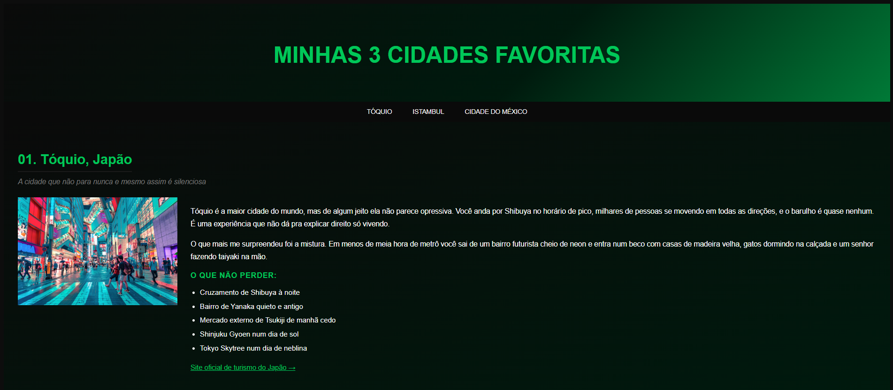
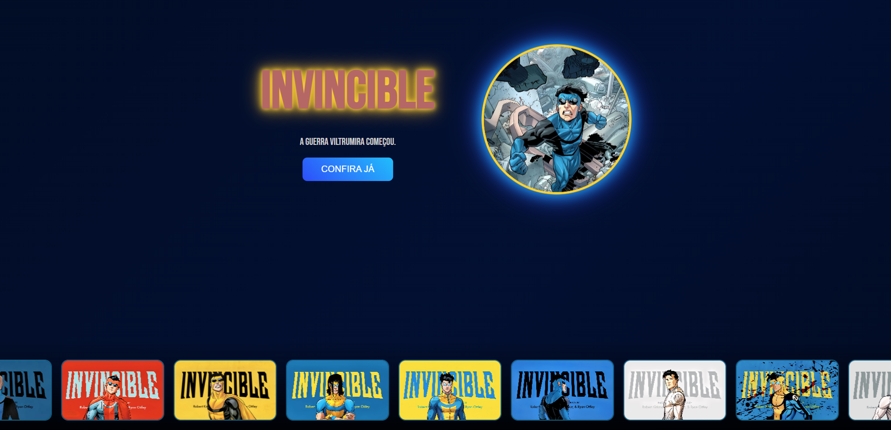
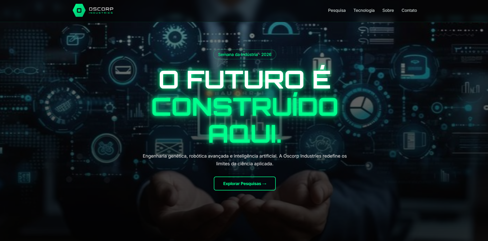
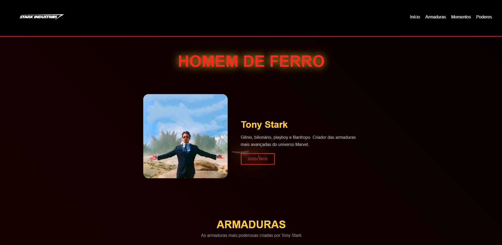
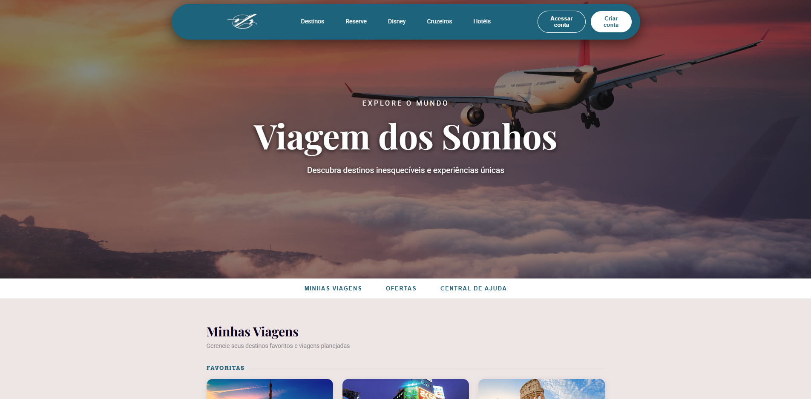
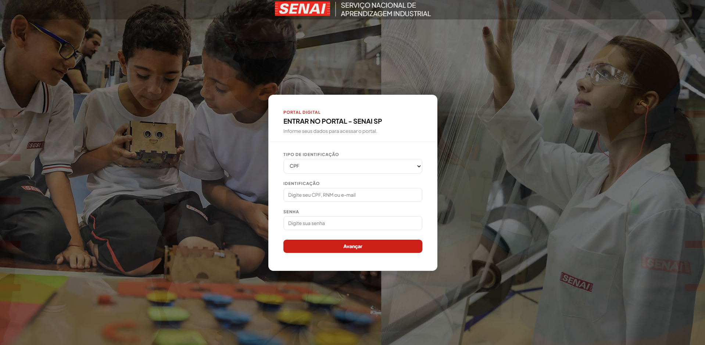

Aula 01
Introdução ao Desenvolvimento Web
Como a web funciona, navegadores, servidores e as primeiras noções de front-end.
Conheça um pouco da minha trajetória e habilidades
Minha Trajetória no Curso de Desenvolvimento de Sistemas
No início do semestre, eu estava começando minha trajetória no curso de Desenvolvimento de Sistemas e ainda tinha conhecimentos básicos sobre a área. Eu já havia realizado alguns cursos de Tecnologia da Informação no SENAI Roberto Simonsen, o que despertou meu interesse pela tecnologia, mas ainda não possuía experiência prática no desenvolvimento de projetos mais completos. Eu tinha curiosidade sobre programação, desenvolvimento de sites e funcionamento dos sistemas, porém ainda não entendia totalmente como essas áreas funcionavam no ambiente profissional.
Minhas expectativas eram aprender novas tecnologias, desenvolver habilidades de programação e adquirir conhecimentos que pudessem ser úteis para minha futura carreira. Também esperava conhecer melhor as diferentes áreas da tecnologia para descobrir quais despertavam mais o meu interesse. Além disso, queria melhorar minha capacidade de resolver problemas e aprender a trabalhar de forma mais organizada em projetos.
Após vários meses de aprendizado, percebo uma grande evolução nos meus conhecimentos e habilidades. Durante o semestre, tive contato com diferentes conteúdos relacionados ao Desenvolvimento de Sistemas, aprendendo conceitos importantes que ampliaram minha visão sobre a área da tecnologia.
Também participei da realização de projetos e atividades práticas que me permitiram aplicar os conhecimentos aprendidos em sala de aula. Essas experiências ajudaram a desenvolver meu raciocínio lógico, minha capacidade de resolver problemas e minha compreensão sobre como os sistemas são criados e organizados.
Além dos conhecimentos técnicos, desenvolvi habilidades importantes como trabalho em equipe, organização, responsabilidade e dedicação aos estudos. Hoje me sinto mais preparado para enfrentar novos desafios e continuar evoluindo dentro da área de tecnologia.
Meu próximo objetivo é continuar aprofundando meus conhecimentos em Desenvolvimento de Sistemas e aprender tecnologias cada vez mais avançadas. Quero ampliar minha experiência em programação, aperfeiçoando as linguagens e ferramentas que já conheço e aprendendo novas tecnologias que são utilizadas no mercado de trabalho.
Pretendo estudar mais sobre desenvolvimento web, banco de dados, lógica de programação e criação de sistemas completos. Também quero entender melhor como funcionam as etapas de planejamento, desenvolvimento, testes e manutenção de um software, pois acredito que esses conhecimentos serão importantes para minha formação profissional.
Outro objetivo é desenvolver projetos cada vez mais complexos, colocando em prática tudo o que venho aprendendo. Acredito que a prática é uma das melhores formas de aprendizado, pois permite identificar erros, encontrar soluções e ganhar experiência. Por isso, pretendo criar novos projetos pessoais e participar de atividades que me desafiem a aprender mais.
Também desejo melhorar minhas habilidades de trabalho em equipe e comunicação, características fundamentais para qualquer profissional da área de tecnologia. Muitas vezes, o desenvolvimento de sistemas envolve a colaboração entre diferentes pessoas, e saber trabalhar em conjunto é tão importante quanto possuir conhecimento técnico.
Além disso, quero acompanhar as mudanças e inovações do setor tecnológico, que está em constante evolução. Novas ferramentas, linguagens e metodologias surgem frequentemente, e considero importante manter uma postura de aprendizado contínuo para acompanhar essas transformações.
Pensando no futuro, pretendo utilizar os conhecimentos adquiridos no curso para construir uma carreira sólida na área de tecnologia. Quero continuar estudar, adquirir novas certificações, participar de projetos relevantes e buscar oportunidades que contribuam para meu crescimento profissional. Acredito que, com dedicação, esforço e vontade de aprender, poderei alcançar meus objetivos e me tornar um profissional cada vez mais qualificado no Desenvolvimento de Sistemas.
timeline detalhada da minha evolução em desenvolvimento web ao longo do semestre, destacando os principais conteúdos estudados e os projetos desenvolvidos.
Ver a jornadaOs principais conteúdos estudados, aula por aula.
Arraste para o lado para ver toda a jornada
Como a web funciona, navegadores, servidores e as primeiras noções de front-end.
Estrutura de documentos, tags fundamentais e conteúdo semântico.
Inputs, labels, botões e validação básica de dados do usuário.
Seletores, cores, tipografia e as primeiras estilizações.
Margin, border, padding e content entendendo o espaço de cada elemento.
Alinhamento e distribuição de elementos em uma dimensão.
Layouts bidimensionais poderosos e organizados com CSS Grid.
Construindo interfaces que se adaptam a qualquer tela.
Pontos de quebra para desktop, tablet e smartphone.
Transições e efeitos que dão vida à interface.
Animações personalizadas com fade, slide, pulse e mais.
Reunindo todo o conhecimento em projetos completos e publicados.
Trabalhos que desenvolvi ao longo do semestre.

Projeto base praticando a estrutura e fundamentos do HTML.
Acessar projeto →
Estudo de animações CSS utilizando a regra @keyframes.
Acessar projeto →
Página temática trabalhando layout, cores e identidade visual.
Acessar projeto →
Landing page temática com foco em estilização avançada.
Acessar projeto →
Projeto de viagens explorando layout responsivo e conteúdo.
Acessar projeto →
Interface de secretaria digital com foco em organização e usabilidade.
Acessar projeto →Protótipo de interface desenvolvido e prototipado no Figma.
Acessar protótipo